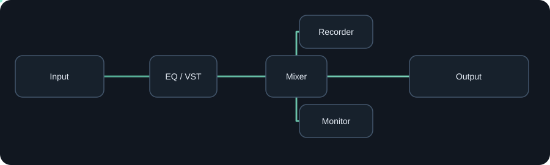

Input & app capture
Bring in a selected microphone or capture audio from an application. Pin a device or follow a Windows default role where supported.
Physical input · process capture · loopbackEach tool has one job. Put it where you need it, adjust what it does, and see how it affects the route.

Bring in a selected microphone or capture audio from an application. Pin a device or follow a Windows default role where supported.
Physical input · process capture · loopbackSend a route to a physical output or compatible installed virtual audio endpoint such as VB-CABLE or Voicemeeter.
WASAPI · virtual endpointsCombine named sources with per-input levels. Fan out to separate destinations without hiding the topology.
Mix · branch · submixBrowse the available node types. Filter by name or use case, then place a tool in the route where it helps.
Loading current tool catalog…
Host compatible installed x64 VST3 audio effects in an isolated worker. Qualified x64 VST2 audio effects are supported too. Expose supported parameters and save the setup with your session.
Compatibility depends on the exact plugin and format. AudioRouter doesn't include third-party plugins or promise every plugin and editor will work.
Read compatibility notes ↗

Record independent branches to WAV or FLAC. Arm the recorder you want, choose a destination, then record while your session is running.
Status and failures are visible. A recorder is never armed just because a session opened.
See recording steps →See activity and understand which branches carry signal.
Save and reopen routes, import/export sessions, and stay organized.
Keep an explicitly running session alive when the editor closes to tray.